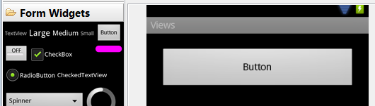
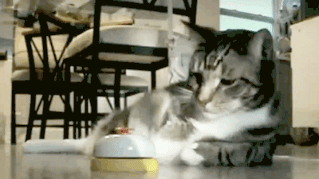

/* Моя кошка замечательно разбирается в программировании. Стоит мне объяснить проблему ей - и все становится ясно. */
John Robbins, Debugging Applications, Microsoft Press, 2000

/* Моя кошка замечательно разбирается в программировании. Стоит мне объяснить проблему ей - и все становится ясно. */
John Robbins, Debugging Applications, Microsoft Press, 2000
Общая информация
Три способа обработки событий нажатий на кнопку
Плодитесь и размножайтесь - это про кошек, а не про кнопки
Сделать кнопку недоступной
Сделать кнопку плоской
Коснись меня нежно
Дополнительное чтение
Кнопка - один из самых распространенных элементов управления в программировании. Наследуется от Textview и является базовым классом для класса СompoundButton. От класса CompoundButton в свою очередь наследуются такие элементы как CheckBox, ToggleButton и RadioButton. В Android для кнопки используется класс android.widget.Button. На кнопке располагается текст и на кнопку нужно нажать, чтобы получить результат. Альтернативой ему может служить элемент ImageButton (android.widget.ImageButton), у которого вместо текста используется изображение.
Компонент Button находится в папке Form Widgets:

Если вы растягиваете кнопку по всей ширине экрана (android:layout_width="match_parent"), то дополнительно рекомендую использовать атрибут android:layout_margin (или родственные ему layout_marginRight и layout_marginLeft) для создания отступов от краев экрана (веб-мастера знакомы с этими терминами).
Так как кнопка является наследником Textview, то использует многие знакомые нам атрибуты: textColor, textSize и др.
Если вы разместили на экране кнопку и будете нажимать на неё, то ничего не произойдёт. Необходимо написать код, который будет выполняться при нажатии. Существует несколько способов обработки нажатий на кнопку.
Относительно новый способ, специально разработанный для Android - использовать атрибут onClick (на панели свойств отображается как On Click):
android:onClick="onMyButtonClick"
Имя для события можно выбрать произвольное, но лучше не выпендриваться. Далее нужно прописать в классе активности придуманное вами имя метода, который будет обрабатывать нажатие. Метод должен быть открытым (public) и с одним параметром, использующим объект View. Вам нужно выучить пять слов для создания метода, а сам метод поместить в класс (если вы ещё путаетесь в структуре Java-кода, то вставьте метод перед последней фигурной скобкой):
public void onMyButtonClick(View view)
{
// выводим сообщение
Toast.makeText(this, "Зачем вы нажали?", Toast.LENGTH_SHORT).show();
}
Когда пользователь нажимает на кнопку, то вызывается метод onMyButtonClick(), который в свою очередь генерирует всплывающее сообщение.
Обратите внимание, что при подобном подходе вам не придётся даже объявлять кнопку через конструкцию (Button)findViewById(R.id.button1), так как Android сама поймёт, что к чему. Данный способ применим не только к кнопке, но и к другим элементам и позволяет сократить количество строк кода.
Более традиционный способ в Java - через метод setOnClickListener(), который прослушивает нажатия на кнопку. Так как для начинающего программиста код может показаться сложным, то рекомендуется использовать подсказки Eclipse. Вот как это будет выглядеть. Предположим, у вас на экране уже есть кнопка Button1. В коде вы объявляете её обычным способом:
Button button1 = (Button)findViewById(R.id.button1);
Следующий шаг - написание метода для нажатия. Напечатайте имя элемента и поставьте точку button1. - среда разработки покажет вам список доступных выражений для продолжения кода. Вы можете вручную просмотреть и выбрать нужный вариант, а можно продолжать набирать символы, чтобы ускорить процесс. Так как с нажатиями кнопок вам часто придётся работать, то запомните название его метода (хотя бы первые несколько символов) - набрав шесть символов (setonc), вы увидите один оставшийся вариант, дальше можно сразу нажать клавишу Enter, не набирая оставшиеся символы. У вас появится строка такого вида:
button1.setOnClickListener(l)
Символ l будет выделен, а также будет видна подсказка OnClickListener l. Пока символ выделен, начинайте набирать new OnClickListener. Здесь также не обязательно набирать имя полностью. Наберите слово oncl и нажмите комбинацию клавиш Ctrl+Space для вывода вариантов продолжения. Eclipse предложит вам единственный вариант, поэтому сразу нажимайте Enter и вы получите готовую заготовку для обработки нажатия кнопки:
button1.setOnClickListener(new OnClickListener() {
@Override
public void onClick(View v) {
// TODO Auto-generated method stub
}
})
Вас могут испугать три красные метки об ошибках. Не пугайтесь, поставьте в самом конце заготовки символ точки с запятой ; после последней круглой скобки, и первая ошибка исчезнет. Далее подведите курсор мыши к слову OnClickListener, которая подчёркнута волнистой красной чертой. Появятся несколько вариантов для исправления ошибки. Выберите вариант Import 'OnClickListener' (android.view.View) и исчезнут оставшиеся две метки. Теперь у вас есть рабочая заготовка и сразу после строки с комментарием TODO Auto-generated method stub вы можете писать свой код. Рекомендую потренироваться и набить руку в создании заготовки. Это не так сложно и с практикой навык закрепится автоматически.
Как вариант, можно вынести код для OnClickListener в отдельное место, это удобно, когда кнопок на экране несколько и такой подход позволит упорядочить код. Удалите предыдущий пример и начните писать код заново. Принцип такой же, немного меняется порядок. В предыдущем примере мы сразу прописали в методе setOnClickListener слушателя new OnClickListener... с методом onClick(). Можно сначала отдельно объявить отдельную переменную:
OnClickListener MyButtonClick = new OnClickListener() {
@Override
public void onClick(View v) {
// TODO Auto-generated method stub
}
};
Во время набора активно используйте подсказки через Ctrl+Space. Набрали несколько символов у первого слова и нажимайте эту комбинацию, набрали после слова new несколько символов и снова нажимайте указанную комбинацию - заготовка будет создана за несколько секунд, а вы избежите возможных опечаток.
У нас есть готовая переменная, и теперь, когда вы будете набирать код button1.setOnClickListener, то опять появится выделенный символ l, но уже с подсказкой, что можно выбрать готовую переменную - выделите её и нажмите Enter или вручную пишите самостоятельно.
Для новичка описание может показаться сумбурным и не понятным, но лучше самостоятельно проделать эти операции и понять механизм.
Третий способ является родственным второму способу и также является традиционным для Java. Кнопка присваивает себе обработчика с помощью метода setOnClickListener (View.OnClickListener l), т.е. подойдет любой объект с интерфейсом View.OnClickListener. Мы можем указать, что наш класс Activity будет использовать интерфейс View.OnClickListener.
Опять стираем код от предыдущего примера. Далее после слов extends Activity дописываем слова implements OnClickListener. Если вы написали код через подсказку, то строка import android.view.View.OnClickListener; вставится в секцию импорта автоматически, в противном случае пропишите самостоятельно.
Название вашего класса будет подчёркнуто волнистой красной чертой, подведите курсор мыши к слову и выберите вариант Add unimplemented methods. В коде появится заготовка для нажатия кнопки.
@Override
public void onClick(View v) {
// TODO Auto-generated method stub
}
Метод будет реализован не в отдельном объекте-обработчике, а в Activity, который и будет выступать обработчиком. В методе onCreate() присвоим обработчик кнопке. Это будет объект this, т.е. текущий объект нашей активности.
button1.setOnClickListener(this);
На первых порах такой способ покажется вам сложным и непонятным. Со временем и опытом понимание обязательно придёт.
Лично я рекомендую вам использовать первый способ, как самый простой и понятный. Использование второго и третьего способа дадут вам представление, как писать обработчики для других событий, так как кнопка может иметь и другие события. Например, кроме обычного нажатия существует долгое нажатие на кнопку (long click). Один из таких примеров с методом касания я привёл в конце этой статьи.
О том, как обрабатывать щелчки кнопки я написал отдельную статью Щелчок кнопки/Счетчик ворон. Также кнопки будут встречаться практически в каждом примере на этом сайте. Про обработку длительный нажатий можно прочитать в статье, посвященной ImageButton.
Когда у вас одна кнопка в окне, то у вас будет один метод, две кнопки - два метода и так далее. Если у вас несколько кнопок, то не обязательно для каждой прописывать свой метод, можно обойтись и одним, а уже в самом методе разделять код по идентификатору кнопки. Если вы посмотрите на код в предыдущих примерах, то увидите, что в методе присутствует параметр View, который и позволяет определить, для какой кнопки предназначен кусок кода:
public void onMyButtonClick(View view)
{
switch(view.getId()) {
case R.id.btn1: // идентификатор "@+id/btn1"
ShowAlertDialog();
break;
...
}
Предположим, у вас есть три кнопки:
import android.view.View.OnClickListener;
public class ButtonDemoActivity extends Activity implements OnClickListener...
final Button button1 = (Button)findViewById(R.id.button1);
final Button button2 = (Button)findViewById(R.id.button2);
final Button button3 = (Button)findViewById(R.id.button3);
// устанавливаем один обработчик для всех кнопок
button1.setOnClickListener(this);
button2.setOnClickListener(this);
button3.setOnClickListener(this);
// анализируем, какая кнопка была нажата. Всего один метод для всех кнопок
@Override
public void onClick(View v){
switch (v.getId()) {
case R.id.button1: editText.setText("Нажата кнопка Button1"); break;
case R.id.button2: editText.setText("Нажата кнопка Button2"); break;
case R.id.button3: editText.setText("Нажата кнопка Button3"); break;
}
}
Как видите, мы сократили количество кода. Теперь у нас один обработчик onClick(), в котором прописаны действия для трёх кнопок.
Иногда нужно сделать кнопку недоступной и активировать её при определённых условиях. Через XML нельзя сделать кнопку недоступной (нет подходящего атрибута). Это можно сделать программно через метод setEnabled():
myButton.setEnabled(false);
Как альтернативу можете рассмотреть атрибут android:clickable, который позволит кнопке не реагировать на касания, но при этом вид кнопки останется обычным.
Стандартная кнопка на экране выглядит выпуклой. Но в некоторых случаях желательно использовать плоский интерфейс. Раньше для этих целей можно было использовать TextView с обработкой щелчка. Но теперь рекомендуют использовать специальный стиль borderlessButtonStyle:
<Button
android:id="@+id/button1"
style="?android:attr/borderlessButtonStyle"
android:layout_width="match_parent"
android:layout_height="wrap_content"
android:onClick="onClick"
android:text="Button" />
Кнопка сохранит своё привычное поведение, будет менять свой цвет при нажатии и т.д.
Если вы внимательно понаблюдаете за поведением кнопки, то увидите, что код срабатывает в тот момент, когда вы отпускаете свою лапу, извините, палец с кнопки. Для обычных приложений это вполне нормально, а для игр на скорость такой подход может оказаться слишком медленным. В подобных случаях лучше обрабатывать ситуацию не с нажатием кнопки, а с его касанием. В Android есть соответствующий слушатель OnTouchListener():
Button button = (Button) findViewById(R.id.button1);
button.setOnTouchListener(new OnTouchListener() {
@Override
public boolean onTouch(View v, MotionEvent event) {
// TODO Auto-generated method stub
if (event.getAction() == MotionEvent.ACTION_DOWN) {
Toast.makeText(getApplicationContext(),
"Молодой человек, не прикасайтесь ко мне!",
Toast.LENGTH_SHORT).show();
}
return false;
}
});
У метода onTouch() есть параметр MotionEvent, позволяющий более тонко определять касания экрана. Если произойдет событие, когда пользователь коснулся экрана, то ему будет соответствовать константа ACTION_DOWN. Соответственно, если пользователь уберёт палец, то нужно использовать константу ACTION_UP. Таким образом, можете расценивать щелчок кнопки как комбинацию двух событий - касания и отпускания.

Продвинутые примеры для кнопок (закрытая зона/второй месяц)